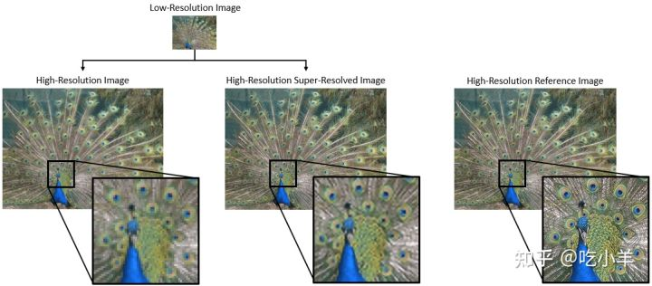
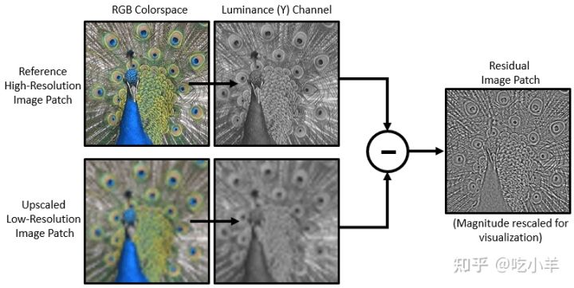
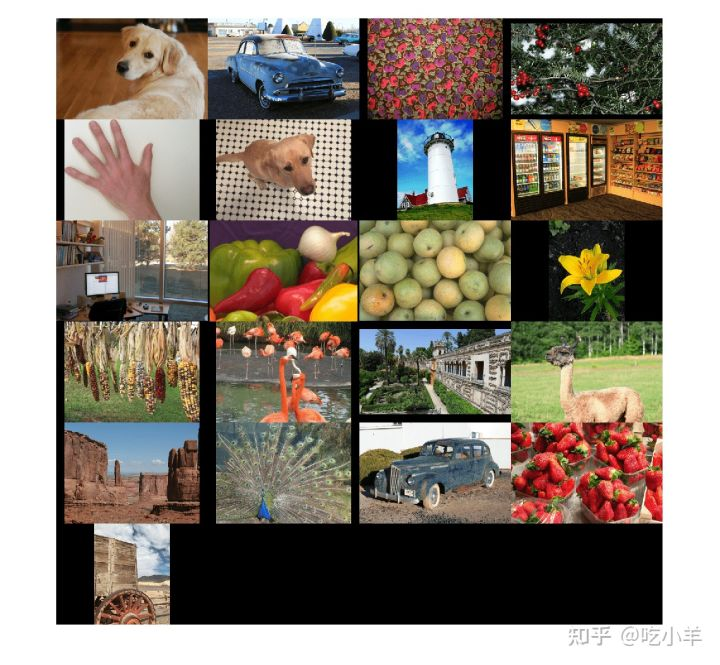
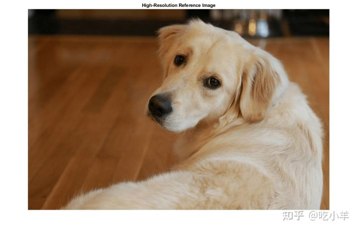
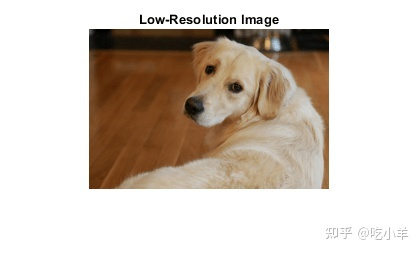
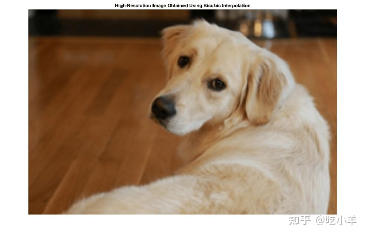
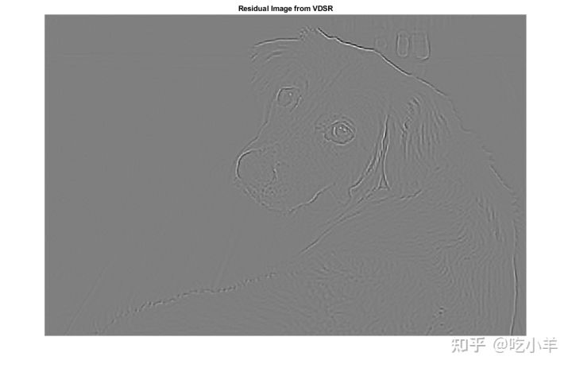
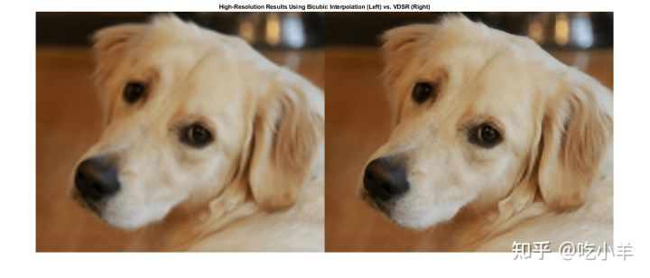

Home
本示例展示了如何使用非常深的超分辨率 (VDSR) 神经网络从低分辨率图像中估计高分辨率图像。
超分辨率是从低分辨率图像创建高分辨率图像的过程。本示例考虑单幅图像超分辨率 (SISR)，其目标是从一张低分辨率图像中恢复出一张高分辨率图像。SISR 具有挑战性，因为高频图像内容通常无法从低分辨率图像中恢复。没有高频信息，高分辨率图像的质量是有限的。此外，SISR 这个提法是不恰当的，因为一张低分辨率图像可以产生多个可能的高分辨率图像。

包括深度学习算法在内的有多种技术可以实施 SISR。本示例探讨了一种用于 SISR 的深度学习算法，称为超深度超分辨率 (VDSR) [ 1 ]。
VDSR 网络
VDSR 是一种卷积神经网络架构，旨在执行单幅图像超分辨率 [ 1 ]。VDSR 网络学习低分辨率和高分辨率图像之间的映射。这种映射是可能的，因为低分辨率和高分辨率图像具有相似的图像内容，主要区别在于高频细节。
VDSR 采用残差学习策略，这意味着网络学习估计残差图像。在超分辨率的背景下，残差图像是高分辨率参考图像和使用双三次插值放大以匹配参考图像大小的低分辨率图像之间的差异。残差图像包含有关图像高频细节的信息。
VDSR 网络从彩色图像的亮度中检测残差图像。图像的亮度通道 ，Y，通过红色、绿色和蓝色像素值的线性组合来表示每个像素的亮度。相比之下，图像的两个色度通道Cb和Cr是代表色差信息的红色、绿色和蓝色像素值的不同线性组合。VDSR 仅使用亮度通道进行训练，因为人类感知对亮度变化比对颜色变化更敏感。

如果 Y-highres是高分辨率图像的亮度，Y-lowres 是使用双三次插值放大的低分辨率图像的亮度，则 VDSR 网络的输入为Y-lowres， 网络学会从训练数据中预测 Y-residual = Y-highres−Y-lowres。
在 VDSR 网络学习估计残差图像后，您可以通过将估计的残差图像添加到升采样的低分辨率图像，然后将图像转换回 RGB 颜色空间来重建高分辨率图像。
比例因子将参考图像的大小与低分辨率图像的大小相关联。随着比例因子的增加，SISR 变得更加不适定，因为低分辨率图像丢失了更多关于高频图像内容的信息。VDSR 通过使用大感受域解决了这个问题。本示例使用多个的比例因子训练 VDSR 网络，比例因子经过比例增强处理。由于网络可以利用来自较小比例因子的图像上下文，因此比例增强可以改善更大比例因子的结果。此外，VDSR 网络可以泛化以接受具有非整数比例因子的图像。
下载训练和测试数据
下载 IAPR TC-12 基准测试，它包含 20,000 张静态自然图像 [ 2 ]。该数据集包括人物、动物、城市等的照片。数据文件的大小约为 1.8 GB。如果您不想下载训练数据集，则可以通过load('trainedVDSR-Epoch-100-ScaleFactors-234.mat');在命令行键入来加载预训练的 VDSR 网络。然后，直接转到本示例中的使用 VDSR 网络执行单幅图像超分辨率部分。
使用辅助函数downloadIAPRTC12Data，下载数据。此函数作为支持文件附加到示例中。
imagesDir = tempdir; url = 'http://www-i6.informatik.rwth-aachen.de/imageclef/resources/iaprtc12.tgz'; downloadIAPRTC12Data(url,imagesDir);
此示例将使用 IAPR TC-12 基准数据的一小部分来训练网络。加载 imageCLEF 训练数据。所有图像均为 32 位 JPEG 彩色图像。
trainImagesDir = fullfile(imagesDir,'iaprtc12','images','02');
exts = {'.jpg','.bmp','.png'};
pristineImages = imageDatastore(trainImagesDir,'FileExtensions',exts);
列出训练图像的数量。
numel(pristineImages.Files) ans = 616
准备训练数据
要创建训练数据集，请生成由升采样图像和相应残差图像组成的图像对。
升采样后的图像作为 MAT 文件存储在磁盘上的 upsampledDirName目录中。计算出的代表网络响应的残差图像作为 MAT 文件存储在磁盘目录residualDirName中。MAT 文件存储为double数据类型，以便在训练网络时获得更高的精度。
upsampledDirName = [trainImagesDir filesep 'upsampledImages']; residualDirName = [trainImagesDir filesep 'residualImages'];
使用辅助函数createVDSRTrainingSet对训练数据进行预处理。此函数作为支持文件附加到示例中。
辅助函数对trainImages中的每个原始图像执行以下操作：
将图像转换为 YCbCr 色彩空间.
通过不同的比例因子缩小亮度 (Y) 通道以创建样本低分辨率图像，然后使用双三次插值将图像调整为原始大小.
计算原始图像和调整大小的图像之间的差异。
将调整后的图像和残留图像保存到磁盘。
scaleFactors = [2 3 4]; createVDSRTrainingSet(pristineImages,scaleFactors,upsampledDirName,residualDirName);
为训练集定义预处理管道
在此示例中，网络输入是使用双三次插值进行升采样的低分辨率图像。所需的网络响应是残差图像。从输入图像文件集合中，创建名为upsampledImages的datastore。从计算出的残差图像文件集合中，创建名为residualImages的datastore。两个datastore都需要一个辅助函数 ，matRead，从图像文件中读取图像数据。此函数作为支持文件附加到示例中。
upsampledImages = imageDatastore(upsampledDirName,'FileExtensions','.mat','ReadFcn',@matRead); residualImages = imageDatastore(residualDirName,'FileExtensions','.mat','ReadFcn',@matRead);
创建（深度学习工具箱）imageDataAugmenter对象，来指定数据增强的参数。在训练期间使用数据增强来改变训练数据，这有效地增加了可用的训练数据量。在这里，增强器指定了 90 度的随机旋转和x方向上的随机反射。
augmenter = imageDataAugmenter( ...
'RandRotation',@()randi([0,1],1)*90, ...
'RandXReflection',true);
创建一个randomPatchExtractionDatastore对象，用以从升采样和残差图像数据存储中执行随机补丁提取 。块提取是从单个较大图像中提取大量小图像块或图块的过程。这种类型的数据增强经常用于图像到图像的回归问题，其中许多网络架构可以在非常小的输入图像尺寸上进行训练。这意味着可以从原始训练集中的每个全尺寸图像中提取大量的补丁，从而大大增加了训练集的规模。
patchSize = [41 41];
patchesPerImage = 64;
dsTrain = randomPatchExtractionDatastore(upsampledImages,residualImages,patchSize, ...
"DataAugmentation",augmenter,"PatchesPerImage",patchesPerImage);
生成的datastore ，dsTrain，在每次迭代的epoch 中向网络提供小批量数据。预览从数据存储读取的结果。
inputBatch = preview(dsTrain);
disp(inputBatch)
InputImage ResponseImage
______________ ______________
{41×41 double} {41×41 double}
{41×41 double} {41×41 double}
{41×41 double} {41×41 double}
{41×41 double} {41×41 double}
{41×41 double} {41×41 double}
{41×41 double} {41×41 double}
{41×41 double} {41×41 double}
{41×41 double} {41×41 double}
设置 VDSR 层
此示例使用 Deep Learning Toolbox™ 中的 41 个独立层定义 VDSR 网络，包括：
imageInputLayer(深度学习工具箱) - 图像输入层.
convolution2dLayer(Deep Learning Toolbox) - 用于卷积神经网络的二维卷积层.
reluLayer(Deep Learning Toolbox) - 修正线性单元 (ReLU) 层.
regressionLayer（深度学习工具箱） - 神经网络的回归输出层.
第一层，imageInputLayer，对图像块进行操作。补丁的大小基于网络感受域，它是影响网络最顶层响应的空间图像区域。理想情况下，网络感受域与图像大小相同，以便该领域可以看到图像中的所有高级特征。在这种情况下，对于具有D 个卷积层的网络，感受域是 (2 D +1)×(2 D +1)。
VDSR 有 20 个卷积层，因此感受域和图像块大小为 41×41。图像输入层接受具有一个通道的图像，因为 VDSR 仅使用亮度通道进行训练。
networkDepth = 20; firstLayer = imageInputLayer([41 41 1],'Name','InputLayer','Normalization','none');
图像输入层之后是一个二维卷积层，其中包含 64 个大小为 3×3 的滤波器。小批量大小决定了过滤器的数量。对每个卷积层的输入进行零填充，以便特征图在每次卷积后保持与输入相同的大小。他的方法 [ 3 ] 将权重初始化为随机值，以便在神经元学习中存在不对称性。每个卷积层后跟一个 ReLU 层，它在网络中引入了非线性。
convLayer = convolution2dLayer(3,64,'Padding',1, ...
'WeightsInitializer','he','BiasInitializer','zeros','Name','Conv1');
指定一个 ReLU 层。
relLayer = reluLayer('Name','ReLU1');
中间层包含 18 个交替的卷积和整流线性单元层。每个卷积层包含 64 个大小为 3×3×64 的过滤器，其中过滤器在 64 个通道的 3×3 空间区域上运行。和以前一样，每个卷积层后面都有一个 ReLU 层。
middleLayers = [convLayer relLayer];
for layerNumber = 2:networkDepth-1
convLayer = convolution2dLayer(3,64,'Padding',[1 1], ...
'WeightsInitializer','he','BiasInitializer','zeros', ...
'Name',['Conv' num2str(layerNumber)]);
relLayer = reluLayer('Name',['ReLU' num2str(layerNumber)]);
middleLayers = [middleLayers convLayer relLayer];
end
倒数第二层是一个卷积层，带有一个大小为 3×3×64 的滤波器，用于重建图像。
convLayer = convolution2dLayer(3,1,'Padding',[1 1], ...
'WeightsInitializer','he','BiasInitializer','zeros', ...
'NumChannels',64,'Name',['Conv' num2str(networkDepth)]);
最后一层是回归层而不是 ReLU 层。回归层计算残差图像和网络预测之间的均方误差。
finalLayers = [convLayer regressionLayer('Name','FinalRegressionLayer')];
连接所有层以形成 VDSR 网络。
layers = [firstLayer middleLayers finalLayers];
或者，您可以使用vdsrLayers辅助函数来创建 VDSR 图层。此函数作为支持文件附加到示例中。
layers = vdsrLayers;
指定训练选项
使用具有动量优化的随机梯度下降 (SGDM) 方法训练网络。使用（深度学习工具箱）函数trainingOptions指定 SGDM 的超参数设置。学习率初值是0.1，每 10 个时期减少 10 倍。训练 100 个 epoch。
训练深度网络非常耗时。指定高学习率可以加速训练。然而，这会导致网络的梯度爆炸或不受控制地增长，从而阻止网络成功训练。要将梯度保持在有意义的范围内，请通过指定'GradientThreshold'为0.01，启用梯度裁剪；并指定'GradientThresholdMethod'，使用梯度的 L2 范数。
maxEpochs = 100;
epochIntervals = 1;
initLearningRate = 0.1;
learningRateFactor = 0.1;
l2reg = 0.0001;
miniBatchSize = 64;
options = trainingOptions('sgdm', ...
'Momentum',0.9, ...
'InitialLearnRate',initLearningRate, ...
'LearnRateSchedule','piecewise', ...
'LearnRateDropPeriod',10, ...
'LearnRateDropFactor',learningRateFactor, ...
'L2Regularization',l2reg, ...
'MaxEpochs',maxEpochs, ...
'MiniBatchSize',miniBatchSize, ...
'GradientThresholdMethod','l2norm', ...
'GradientThreshold',0.01, ...
'Plots','training-progress', ...
'Verbose',false);
训练网络
默认情况下，示例加载 VDSR 网络的预训练版本，该网络已以超分辨率图像比例因子为 2、3 和 4经过训练。预训练网络使您无需等待训练完成即可执行测试图像的超分辨率.
要训练 VDSR 网络，请在以下代码中将变量doTraining设置为true。使用（深度学习工具箱）trainNetwork函数训练网络。
如果可用，则在 GPU 上进行训练。使用 GPU 需要 Parallel Computing Toolbox™ 和支持 CUDA® 的 NVIDIA® GPU。在 NVIDIA Titan X 上训练大约需要 6 小时。
doTraining = false;
if doTraining
net = trainNetwork(dsTrain,layers,options);
modelDateTime = string(datetime('now','Format',"yyyy-MM-dd-HH-mm-ss"));
save(strcat("trainedVDSR-",modelDateTime,"-Epoch-",num2str(maxEpochs),"-ScaleFactors-234.mat"),'net');
else
load('trainedVDSR-Epoch-100-ScaleFactors-234.mat');
end
使用 VDSR 网络执行单幅图像超分辨率
要使用 VDSR 网络执行单幅图像超分辨率 (SISR)，请按照本示例的其余步骤进行操作。该示例的其余部分显示了如何：
从高分辨率参考图像创建示例低分辨率图像。
使用双三次插值对低分辨率图像执行 SISR，这是一种不依赖于深度学习的传统图像处理解决方案。
使用 VDSR 神经网络对低分辨率图像执行 SISR。
使用双三次插值和 VDSR 直观地比较重建的高分辨率图像。
通过量化图像与高分辨率参考图像的相似性来评估超分辨率图像的质量。
创建低分辨率图像示例
创建一个低分辨率图像，用于将使用深度学习的超分辨率结果与使用双三次插值等传统图像处理技术的结果进行比较。测试数据集testImages包含在 Image Processing Toolbox™ 中提供的 21 个未失真的图像。将图像加载到imageDatastore.
exts = {'.jpg','.png'};
fileNames = {'sherlock.jpg','car2.jpg','fabric.png','greens.jpg','hands1.jpg','kobi.png', ...
'lighthouse.png','micromarket.jpg','office_4.jpg','onion.png','pears.png','yellowlily.jpg', ...
'indiancorn.jpg','flamingos.jpg','sevilla.jpg','llama.jpg','parkavenue.jpg', ...
'peacock.jpg','car1.jpg','strawberries.jpg','wagon.jpg'};
filePath = [fullfile(matlabroot,'toolbox','images','imdata') filesep];
filePathNames = strcat(filePath,fileNames);
testImages = imageDatastore(filePathNames,'FileExtensions',exts);
将测试图像显示为蒙太奇。
将测试图像显示为蒙太奇。
montage(testImages)

选择一张图像作为超分辨率的参考图像。您可以选择使用自己的高分辨率图像作为参考图像。
indx = 1; % Index of image to read from the test image datastore
Ireference = readimage(testImages,indx);
Ireference = im2double(Ireference);
imshow(Ireference)
title('High-Resolution Reference Image')

使用imresize，设置0.25 的缩放因子，创建高分辨率参考图像的低分辨率版本。图像的高频分量在缩小过程中会丢失。
scaleFactor = 0.25;
Ilowres = imresize(Ireference,scaleFactor,'bicubic');
imshow(Ilowres)
title('Low-Resolution Image')

使用双三次插值提高图像分辨率
在没有深度学习的情况下提高图像分辨率的标准方法是使用双三次插值。使用双三次插值放大低分辨率图像，以便生成的高分辨率图像与参考图像的大小相同。
[nrows,ncols,np] = size(Ireference);
Ibicubic = imresize(Ilowres,[nrows ncols],'bicubic');
imshow(Ibicubic)
title('High-Resolution Image Obtained Using Bicubic Interpolation')

使用预训练的 VDSR 网络提高图像分辨率
回想一下，VDSR 仅使用图像的亮度通道进行训练，因为人类感知对亮度变化比对颜色变化更敏感。
从RGB颜色空间变换低分辨率图像亮度（Iy）和色度（Icb和Icr）通道，使用rgb2ycbcr函数。
Iycbcr = rgb2ycbcr(Ilowres); Iy = Iycbcr(:,:,1); Icb = Iycbcr(:,:,2); Icr = Iycbcr(:,:,3);
使用双三次插值放大亮度和两个色度通道。升采样色度通道Icb_bicubic和Icr_bicubic，不需要进一步处理。
Iy_bicubic = imresize(Iy,[nrows ncols],'bicubic'); Icb_bicubic = imresize(Icb,[nrows ncols],'bicubic'); Icr_bicubic = imresize(Icr,[nrows ncols],'bicubic');
通过经过训练的 VDSR 网络，传递放大的亮度分量Iy_bicubic。从最后一层（回归层）观察（深度学习工具箱）activations。网络的输出是所需的残差图像。
Iresidual = activations(net,Iy_bicubic,41);
Iresidual = double(Iresidual);
imshow(Iresidual,[])
title('Residual Image from VDSR')

将残差图像与放大后的亮度分量相加，得到高分辨率的 VDSR 亮度分量。
Isr = Iy_bicubic + Iresidual;
将高分辨率 VDSR 亮度分量与放大的颜色分量连接起来。使用ycbcr2rgb函数将图像转换为 RGB 颜色空间。结果是使用 VDSR 的最终高分辨率彩色图像。
Ivdsr = ycbcr2rgb(cat(3,Isr,Icb_bicubic,Icr_bicubic));
imshow(Ivdsr)
title('High-Resolution Image Obtained Using VDSR')
视觉和定量比较
为了更好地视觉理解高分辨率图像，请检查每个图像内的一个小区域。使用格式为 [ x y width height ] 的向量roi，指定感兴趣区域 (ROI) 。这些元素定义了左上角的 x 和 y 坐标，以及 ROI 的宽度和高度。
roi = [320 30 480 400];
将高分辨率图像裁剪到此 ROI，并将结果显示为蒙太奇。与使用双三次插值创建的高分辨率图像相比，VDSR 图像具有更清晰的细节和更清晰的边缘。
montage({imcrop(Ibicubic,roi),imcrop(Ivdsr,roi)})
title('High-Resolution Results Using Bicubic Interpolation (Left) vs. VDSR (Right)');

使用图像质量指标定量比较使用双三次插值的高分辨率图像与 VDSR 图像。在准备样本低分辨率图像之前，参考图像是原始高分辨率图像Ireference。
测量每个图像相对于参考图像的峰值信噪比 (PSNR)。PSNR 值越大通常表示图像质量越好。
bicubicPSNR = psnr(Ibicubic,Ireference) bicubicPSNR = 38.4747 vdsrPSNR = psnr(Ivdsr,Ireference) vdsrPSNR = 39.2346
测量每个图像的结构相似性指数 (SSIM)。SSIM 评估图像的三个特征对参考图像的视觉影响：亮度、对比度和结构。SSIM 值越接近 1，测试图像与参考图像的一致性越好。
bicubicSSIM = ssim(Ibicubic,Ireference) bicubicSSIM = 0.9861 vdsrSSIM = ssim(Ivdsr,Ireference) vdsrSSIM = 0.9874
使用自然度图像质量评估器 (NIQE) 测量感知图像质量。NIQE 分数越小表示感知质量越好。
bicubicNIQE = niqe(Ibicubic) bicubicNIQE = 5.1721 vdsrNIQE = niqe(Ivdsr) vdsrNIQE = 4.7611
针对比例因子 2、3 和 4，计算整个测试图像集的平均 PSNR 和 SSIM。为简单起见，您可以使用辅助函数superResolutionMetrics来计算平均指标。此函数作为支持文件附加到示例中。
scaleFactors = [2 3 4]; superResolutionMetrics(net,testImages,scaleFactors); Results for Scale factor 2 Average PSNR for Bicubic = 31.809683 Average PSNR for VDSR = 31.921784 Average SSIM for Bicubic = 0.938194 Average SSIM for VDSR = 0.949404 Results for Scale factor 3 Average PSNR for Bicubic = 28.170441 Average PSNR for VDSR = 28.563952 Average SSIM for Bicubic = 0.884381 Average SSIM for VDSR = 0.895830 Results for Scale factor 4 Average PSNR for Bicubic = 27.010839 Average PSNR for VDSR = 27.837260 Average SSIM for Bicubic = 0.861604 Average SSIM for VDSR = 0.877132
对于每个比例因子，VDSR 比双三次插值具有更好的度量分数。
参考文献
[1] Kim, J., J. K. Lee, and K. M. Lee. "Accurate Image Super-Resolution Using Very Deep Convolutional Networks." Proceedings of the IEEE**® Conference on Computer Vision and Pattern Recognition. 2016, pp. 1646-1654.
[2] Grubinger, M., P. Clough, H. Müller, and T. Deselaers. "The IAPR TC-12 Benchmark: A New Evaluation Resource for Visual Information Systems." Proceedings of the OntoImage 2006 Language Resources For Content-Based Image Retrieval. Genoa, Italy. Vol. 5, May 2006, p. 10.
[3] He, K., X. Zhang, S. Ren, and J. Sun. "Delving Deep into Rectifiers: Surpassing Human-Level Performance on ImageNet Classification." Proceedings of the IEEE International Conference on Computer Vision, 2015, pp. 1026-1034.
======================================================================
我的测试结果及程序
下面是我测试的代码：

注：本文根据MATLAB官网内容修改而成。